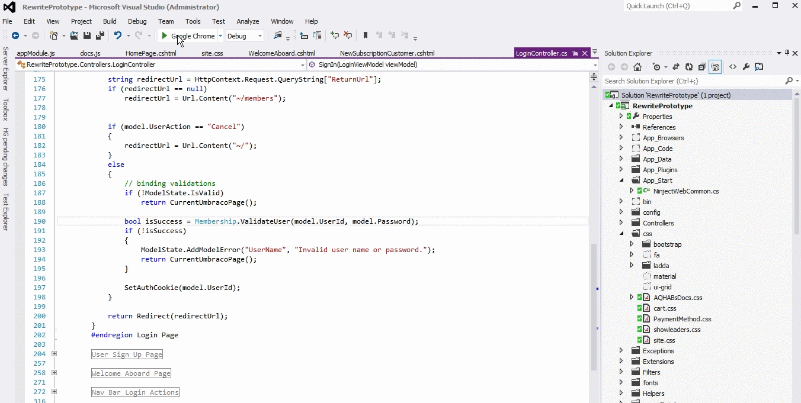

Making it Visual Studio Friendly
In theory you could now fire up your development server in VS like normal (the localhost:54604 part of the batch file) and then launch the batch file manually. But we can take it one more step to make it more friendly to Visual Studio. Create an "External Tool" to lanuch the browsers for you Tools -> External Tools...:

Now you should be able to lanuch your debugger, and then use your new tool in the Tools menu. Be aware that when you start BrowserSync it will open a new command window for the process. BrowserSync will continue to run until you close that. I tried making the External Tool close this when you stop it, but that kept leaving NodeJs running and hogging port 3000 until you went out and manually killed Node. Feel free to solve that problem if you feel like it.
Happy Coding!